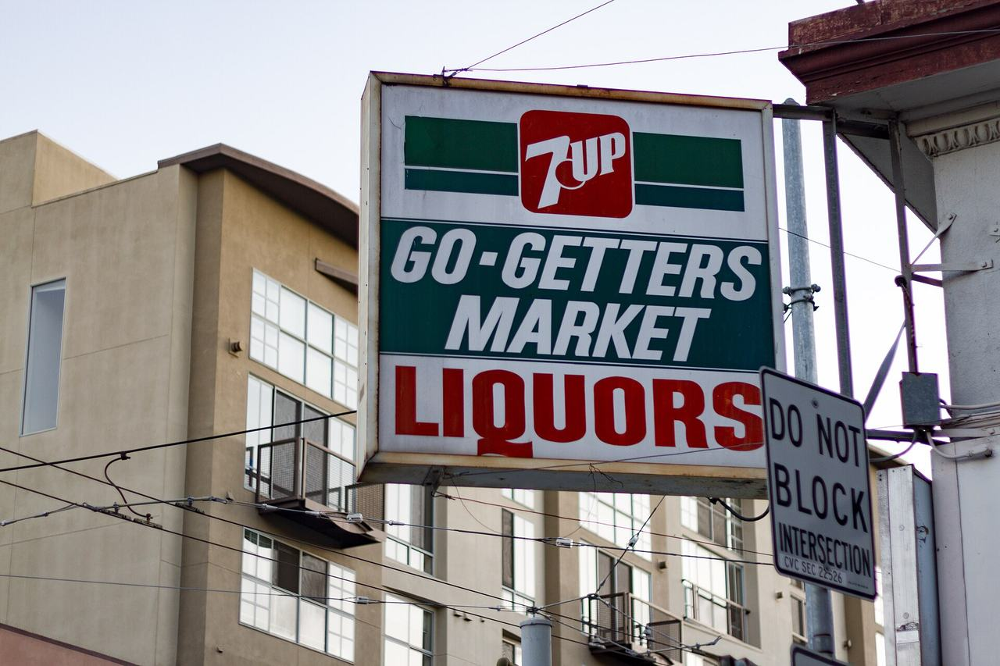

Hayes Valley
A central district west of Civic Center, taking in the eastern edge of Alamo Square and its rows of Victorian houses.

Map
Named buildings and landmarks
-
1

-
2

-
3

-
4
-
5

-
6
-
7

-
8

-
9

-
10

-
11
-
12
Also here: Sacred Heart Convent, Russell Warren House, Machinists' Hall, United States Mint, Duboce Apartments, St. Paul's German Methodist Church, Church of the Advent, Masonic Temple, Whiteside Apartments, Gaffney Building/Lady Hub Apartments, Allen Arms, Banneker Homes, Germania Street Houses, San Francisco Ballet Building, Fulton Mews, Daphne Funeral Home, Young Men's Institute, Davies Symphony Hall.
Streets documented so far
- Birch Street
6 buildings, built 1900–1912; 6 in the Hayes Valley Residential Historic District. - Buchanan Street
1 building, built 1878; 1 in the Hayes Valley Residential Historic District. - Church Street
1 building, built 1905. - Divisadero Street
1 building, built 1900. - Fell Street
2 buildings, built 1910–1929. - Fillmore Street
1 building, built 1900; 1 in the Hayes Valley Residential Historic District. - Franklin Street
3 buildings, built 1909–1912; 1 in the Market Street Masonry Historic District. - Fulton Street
1 building, built 1924; 1 in the Alamo Square Historic District. - Germania Street
1 building, built 1900. - Gough Street
1 building, built 1917. - Grove Street
1 building, built 1920. - Haight Street
1 building, built 1952. - Hayes Street
1 building, built 1911; 1 in the Hayes Valley Residential Historic District. - Hermann Street
1 building, built 1900. - Hickory Street
7 buildings, built 1890–1922; 7 in the Hayes Valley Residential Historic District. - Ivy Street
8 buildings, built 1890–1937; 8 in the Hayes Valley Residential Historic District. - Laguna Street
1 building, built 1890; 1 in the Hayes Valley Residential Historic District. - Laussat Street
1 building, built 1990; 1 in the Lower Haight Victorian Era Historic District. - Lily Street
1 building, built 1946; 1 in the Hayes Valley Residential Historic District. - Linden Street
2 buildings, built 1924–1971; 2 in the Hayes Valley Residential Historic District. - Market Street
5 buildings, built 1900–1931; 1 in the Hayes Valley Residential Historic District. - Mcallister Street
1 building, built 1900. - Oak Street
1 building, built 2008. - Octavia Street
3 buildings, built 1946; 3 in the Hayes Valley Residential Historic District. - Page Street
3 buildings, built 1900–1924; 3 in the Hayes Valley Residential Historic District. - Rose Street
2 buildings, built 1900–1952; 2 in the Hayes Valley Residential Historic District. - Steiner Street
One of the Alamo Square Painted Ladies of Postcard Row; Alice Walker's home until 1996. - Van Ness Avenue
2 buildings, built 1900–1911; 1 in the Civic Center Historic District. - Waller Street
1 building, built 1931; 1 in the Hayes Valley Residential Historic District. - Webster Street
1 building; 1 in the Hayes Valley Residential Historic District.
Parks and public spaces
- Hayes Valley Playground
Neighborhood park or playground, 32,670 sq ft. - Koshland Park
Neighborhood park or playground, 41,818 sq ft. - Page & Laguna Mini Park
Mini park, 7,841 sq ft. - Page Street Community Garden
Community garden, 3,920 sq ft. - Patricia's Green in Hayes Valley
Neighborhood park or playground, 20,909 sq ft.
Historic districts here
- Alamo Square Historic District
- Buena Vista North Historic District
- Civic Center Historic District
- Hayes Valley Commercial Historic District
- Hayes Valley Residential Historic District
- Market Street Masonry Historic District
- NOPA Historic District
- Panhandle Historic District
- San Francisco 1952 Firehouse Bond Act Thematic District (Discontiguous)
Adjacent neighborhoods
The Western Addition adjoins north-west and the Tenderloin east across Van Ness Avenue. The Mission begins south-east over Market Street, the Castro further west along it, Haight Ashbury west past Divisadero Street, and Lone Mountain / USF north-west beyond the Panhandle.